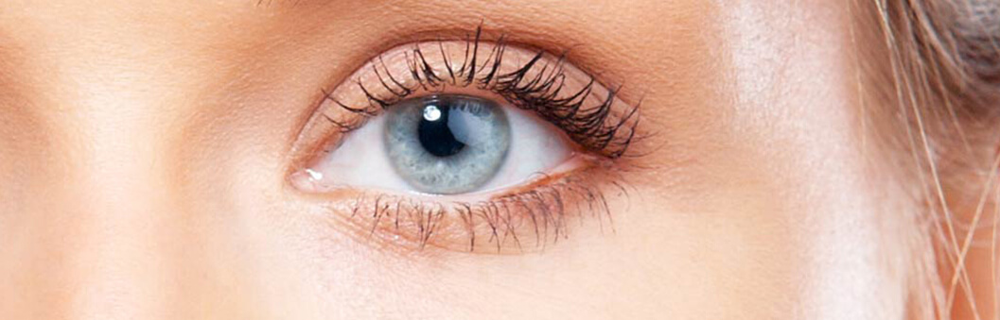

ZPRÁVY MEDICÍNA
Laserová korekce zraku již není nutná
Podle statistik má každý třetí Evropan problémy se zrakem. Podle průzkumu veřejného mínění z roku 2017 většina z nich si přejí navždy zapomenout na kontaktní čočky a brýle, ale bez použití chirurgického zákroku. Jíž dnes je možné splnit tuto touhu!
normální zrak
krátkozrakost
dalekozrakost

Operace na očí: jaké jsou důsledky
Laserová korekce zraku již není tak populární. Nezávislý odborník v oboru oftalmologie František Novotný vysvětluje tuto situaci častými případy negativního výsledku operací na oči a zrak a pacienta.
Kvalitní operace na oči stojí hodně peněz, deset až patnáctinásobek životních nákladů Čechů. Při hledání alternativních způsobů léčby lidé hledají možnosti, kde můžou najít peníze které se stanou dostupnějšími klinikami se zastaralým medicinským vybavením.
Statistiky WHO uvádějí, že asi 45 milionů lidí v naší zemi má problémy se zrakem. A pouze 11% z nich si může dovolit drahé ošetření, které zahrnuje laserovou korekci.
Jsem v kontaktu s pacienty, kteří po operaci ztratili vidění o 5-7 procent. Bohužel v takových případech je již nemožné obnovit přirozené vidění. Až do konce svého života budou tito lidé nuceni nosit brýle.
 Operace obnovení vidění nemusí
vždy skončit úspěšně
Operace obnovení vidění nemusí
vždy skončit úspěšně
Populární způsoby, jak obnovit vidění
Existuje hodně populárních a takřikajic „lidových“ způsobů rehabilitace zraku. Patří sem oční gymnastika, jíst hodně ovoce a zeleniny, bohaté na vitamíny A, B1, B2, B12, C a další.
Na rozdíl od všeobecného přesvědčení není možné tímto způsobem vrátit si zrak. Důvodem je, že pro získání potřebného procenta vitamínů z jídla musíte jíst takové množství čerstvé protraviny, které se žaludek člověka jednoduše nevejde.
Například 10 kilogramů mrkve nebo 15 kg borůvek denně. Kromě toho, bohužel, ne absorbuje se vitamín jen tak jednoduše. Protože, u každého prvku je třeba pozorovat řadu postupu, které je třeba dodržovat.
Riboforin (vitamin A) špatně absorbujou kuřáky a lidi, kteři často pijou alkohol, stejně jako i výskyt snížené normy vitaminu E a zinku v krvi. Avšak i u lidí, kteří vedou zdravý životní styl, se vitamín A vstřebává pouze při jeho konzumaci společně s dostatkem tuku.
Samostatné použivání čistých vitamínů z lékárny má zpravidla opačný účinek a vede k hypovitaminóze, což vede zase ke sníženému zraku.
 Je téměř nemožné získat
dostatek vitamínů pro vidění z jídla,
Je téměř nemožné získat
dostatek vitamínů pro vidění z jídla,
Moderní metody očí
Přední evropský oftalmolog vyvinul lék, který v blízké budoucnosti nahradí laserovou korekci. Lék je na evropském trhu registrována pod obchodním názvem .
Po dobu své existence umožnilo více než 100 tisícům lidí sundat si brýle a navždy vyhodit čočky. Vědci strávili vývojem více než 7 let. Další 4 roky byly využity na provádění klinických experimentů.
Bezprecedentní účinnost produktu je způsobena složením, které nemá žádné analogy, což zahrnuje výtažky z ginkgo biloby, borůvky, třezalky tečkované a aromatické martinií.
Důležitou roli při tvorbě těchto tobolek sehrála metoda extrakce studené vody , která nám umožnila zachovat biochemické složení vitamínů v plném rozsahu.
Účinné látky léku jsou schopné zvýšit hladinu vitamínů v organismu, nezbytných pro dobrý zrak za jen za 2-4 týdny. Během této doby se vyrovná rovnováha stopových prvků zodpovědných za ostrost zraku.
To vede k přirozené stabilizaci očního tlaku a očních svalů, posiluje sítnici a zlepšuje zrak.
Kde koupit ?
Tento lék brzy nebude k dispozici v Evropských lékárnických řetězcích. Mezitím lze zakoupit na webových stránkách oficiálního dodavatele .
13 komentářů čtenáře
Moje dcera používá pravidelně. Je velmi spokojená. Čočky jsme už dávno vyhodili.
Včera jsem si objednala balíček s . Rrychle mi ho doručili, všechno je v pořádku. Už si ho beru.
Bojují proti bolesti v očích, beru už druhý týden, takže můj zrak se opravdu zlepšuje! Jsem tak šťastná!
Objednala jsem , teď se nemůžu dočkát na balík :)
Beru už týden a můj zrak se zlepšil na 90%! Děkuji moc !!!!
Bral jsem Oftalmax celý měsíc a můj zrak se stal 100%! Nemám co k tomu dodát!
Brala jsem jen týden a můžu o tom přípravku říct jen pozitvní veci. Vidím výrazně lépe! Snažím se už ne nosit brýle.
Podařilo se mi zlepšit vidění až na 80% za 4 týdny. A chci to zlepšit na 100%, a jsem jistý, že s se mi to podáří)). Pravda je, že občas jsem příliš líný a zapomínám si vzít ten prášek. Je potřeba si to vzít pod přísnou kontrolu a dokončit to, co jsem začal)
Vojto, jsem taky taková! Vždy jsem zapomínala vzít tu pilulku. Ale i tak, můj zrak se zlepšil. Bylo to +1,5, nyní 0,8.
Pogratulujite mě! Úplně jsem si obnovila zrak! Nevěřím tomu ani sama !!! Včera jsem byla u doktora! Můj manžel také začal brát , ačkoli nemá tak špatný zrak jako já.
Přátelé, doufám, že budete mít stejné štěstí jako já. Znovu jsem rehabilitovala svůj zrak jen za 12 dní od -2 do 0,8. Díky tomu, kdo ten přípravek vytvořil. Hodně štěstí všem!
Teta si objednala , a právě dokončila kurz. Zlepšil se jí zrak od -3,5 do -1. Dokonce neexistují žádná slova, jak je šťastná celá rodina.
To je super lék, a důležité je – že je pro užívání jednoduchý a rychlý. Tenti článek mě hodně pomohl rozhodnout ;) Včera jsem šla k očnímu lékaři , ten byl z výsledku šokován.
Děkuji za článek. Jako vždy, je to velmi užitečné. Už si jdu objednat.